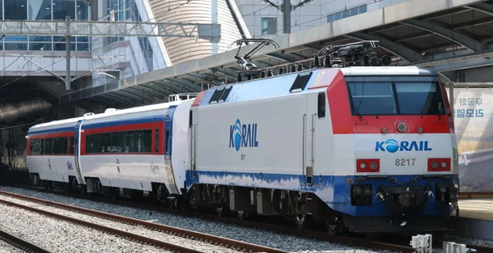

철도 종사자 사이에서 1차 검사에서 알코올이 감지된 뒤 연차를 내 2차 정밀측정을 받지 않는,
이른바 ‘연차 활용 음주 측정 회피’ 사례가 잇따르고 있다.
올해 1∼8월 철도 종사자 업무 전 음주검사에서 1차 감지기에 알코올이 감지된 건수는 3936건이었다.
1차 감지기는 가글이나 의약품 등에도 반응할 수 있어 알코올 농도를 측정하는 2차 정밀 측정을 거친다.
이 가운데 92건에서 혈중알코올농도 0.02% 이상이 확인됐다.
직종별로는 운전직 25건, 사무영업 18건, 차량 17건, 전기 13건 등의 순이었다.
2차 측정에서 기준치 이상이면 당일 근무에서 제외되고 적발 횟수에 따라 경고나 징계를 받는다.
하지만 1차 검사 이후 본인이 연차를 사용하면 2차 측정 자체가 이뤄지지 않는다.
코레일 규정상 출근했더라도 업무 시작 전 자발적으로 귀가하면 음주 관련 조치를 적용하지 않기 때문이다.
1차 검사 후 연차를 쓴 경우가 올해만 281건,
음주 측정 기록관리 시스템을 도입한 지난해 8월 말 이후로는 450건이었다.
4천? ㅋㅋ